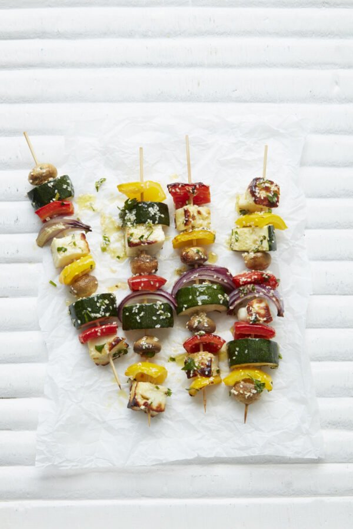

Halloumi, Vegetable and Sesame Skewers

Description
Great kebabs for barbecues and outdoor cooking, can also be cooked under the grill during winter. Halloumi a cheese that is lower in fat and high in protein. The chewy, salty cheese pairs wonderfully with the grilled vegetables! Any colorful vegetable like cherry tomatoes, eggplant, or corn will add variety to the dish!
Ingredients
- 9 oz Halloumi, cut into 1-inch cubes
- 2 red onions, quartered
- 2 red or yellow peppers, deseeded, and cut into 1-inch pieces
- 3 courgettes, cut into 1-inch pieces
- 16 button mushrooms
For the Dressing:
- 2 tbsp extra virgin olive oil
- Juice of 1 lemon
- A small handful of chopped fresh herbs, such as thyme, rosemary, mint, or parsley
- 2 tbsp sesame seeds
- Salt and freshly ground black pepper
To Serve:
- Warm flatbreads
- Rocket and watercress
Steps
- Soak 8 bamboo skewers in a bowl of water for a few minutes (to stop them from burning).
- Thread halloumi cubes and vegetables onto the skewers.
- In a bowl, mix together the ingredients for the dressing and brush the skewers with half the dressing.
- Place a griddle pan or barbecue on a medium heat. Add the skewers and cook for 5 minutes before turning over and cooking on the other side for 5 minutes until lightly charred.
- Drizzle with the remaining dressing before serbing with warm flatbreads, rocket, and watercress.